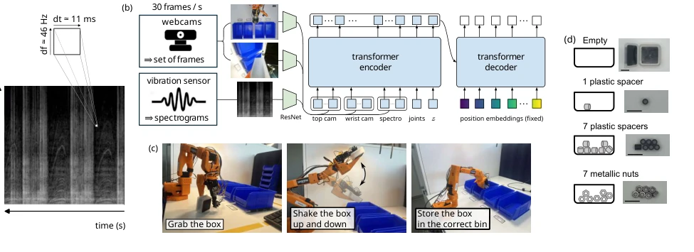
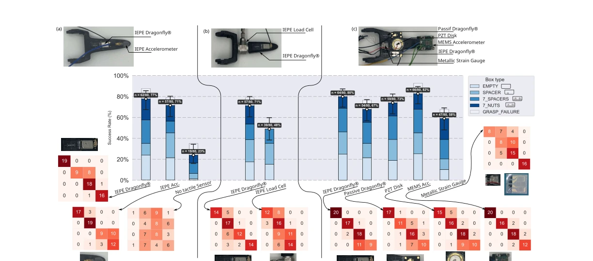

This paper delivers a 'dimensionality reduction attack' on tactile perception. While others are still stacking sensor arrays for spatial resolution, it turns single-point high-frequency vibration into a spectrogram and feeds it directly to a visual encoder. This move is clever, saving hardware costs and utilizing contact dynamics invisible to the human eye. However, to be critical, the task design is a bit 'simple and rough', just shaking a box to guess what is inside; although vision is occluded, it is essentially a classification problem, still far from true dexterous manipulation (like threading a needle). Moreover, high-bandwidth acquisition costs are not low; although a low-cost solution was tried at the end, the noise increased significantly. Overall, it is a clever engineering hack, proving that 'listening to sound to locate position' works in robots, but do not expect it to replace all tactile arrays. Additionally, it emphasizes bandwidth over spatial density, challenging the traditional tactile design paradigm. However, for static force perception, piezoelectric sensors have inherent shortcomings, which the paper also admits.
Vision-dominated robot learning has a significant flaw: it cannot see physical interactions under the contact surface. Early OpenAI research [2] even claimed tactile is non-essential for dexterous manipulation, but this ignores high-frequency dynamics like friction and slipping. Existing tactile solutions mostly rely on spatially distributed sensor arrays [15][23], pursuing spatial resolution, but ignoring time information from single-point high-frequency sampling. Traditional tactile bandwidth is low (<1kHz), unable to keep up with high-frequency vibrations of rigid contact. This paper aims to prove that increasing single-point bandwidth is better than increasing spatial density for mining contact dynamics information, and can be compatible with existing visual architectures. Additionally, contact mechanics are hard to model in sim-to-real transfer, real data is more reliable. But existing work lacks a unified high-bandwidth tactile interface, leading to integration difficulties.
The core is the SpectRobot framework. Data flow: Sensor collects high-frequency signal (up to 100kHz) -> converted to 224x224 grayscale spectrogram -> ResNet encoding -> ACT policy network. Innovations: 1. Signal representation: Use linear frequency scale spectrogram instead of traditional tactile matrix, retaining time-frequency information, compatible with Vision Encoder. 2. Sensor layout: Sensors are away from contact point but mechanically coupled, reducing wear. 3. Bandwidth decoupling: Sampling rate is far higher than policy update rate (30Hz), using short time windows to compress information. 4. Generality: Supports multiple physical quantities like acceleration, force, strain, just need to convert to image. In specific implementation, LeRobot framework is used, ACT architecture [1], ResNet-18 processes spectrograms. Spectrogram generation uses Tukey window, 50% overlap, nFFT 64-4096. Sensors include MEMS, IEPE, etc., installed on robotic arms. Training uses real-world demonstrations, avoiding simulation simplification of high-frequency physical information. Spectrograms are input as grayscale images, no RGB mapping needed.

Figure 1. SpectRobot framework. (a) Example of a 224 × 224 grayscale input spectrogram. (b) Learning pipeline, adapted from [1]. (c) Sorting task: the robot picks up and shakes an opaque box, uses visual observations from top and wrist camera, as well as tactile spectrograms to infer one of four hidden contents, and places the box in the corresponding bin. (d) Box contents used in the sorting task. Scale bar indicates 2 cm.
Dataset: Real-world grasping, 40 demonstrations, 4 object classes (empty box, 1 plastic pad, 7 plastic pads, 7 metal nuts). Baseline: Pure vision (23% success rate). Metric: Task success rate. Results: Significantly improved after adding tactile, max 92%. Ablation: Long temporal context (2.9s) is more critical than short time window (0.3s); bandwidth improvement from 10kHz to 100kHz is limited. Low-cost solution (Teensy + ADC) can also reach 90% when signal is strong. Conclusion: Temporal information is more important than high-frequency, single-point high-frequency is enough to solve visual occlusion classification. Confusion matrix shows different sensors have different error patterns. Visual strategy relies only on guessing, tactile strategy can distinguish material and quantity.

Figure 2. Results of the autonomous rollouts. (a,b,c) The three gripper designs. (middle) Success rates with 95% Wilson score confidence intervals, calculated following [37]. (bottom) Confusion matrices for each sensor. Rows indicate the actual box content (empty, 1 spacer, 7 spacers or 7 metallic nuts), while columns indicate the blue bin selected by the robot.